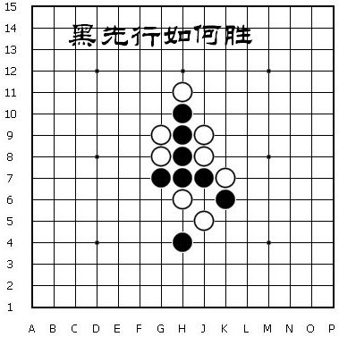
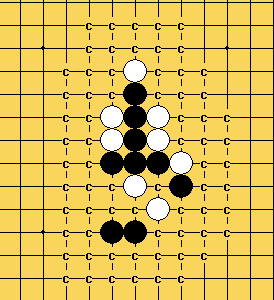

请教天羽老师
首页
习题专区
#1 请教天羽老师 作者：红舞鞋 发表时间：2008-12-4 18:46:02
看图

#2 Re:请教天羽老师 作者：nara 发表时间：2008-12-4 20:16:57

如图,这样杀了吧!
回楼下的,这个可能是习题,不一定是实战.呵呵!
［ 快乐天羽 于 2008-12-6 13:21:02 时奖励此帖[金币加 20 威望加1］
#3 Re:请教天羽老师 作者：Solmyr 发表时间：2008-12-4 20:44:51
=======上图对应的爱五子棋谱代码如下，以便你拆解：========
h8i9g7i8i7g9h7j7h9h6h10h11j6g8h4
======================================================咋走出这局面的？这样？感觉好诡异的样子~
#4 Re:请教天羽老师 作者：红舞鞋 发表时间：2008-12-4 20:54:21
已经解决